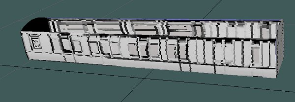
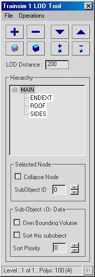
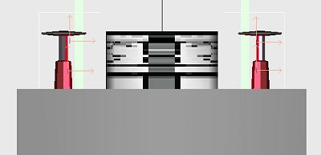
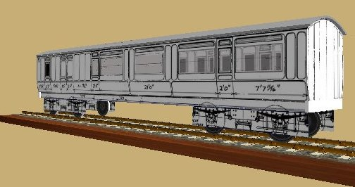
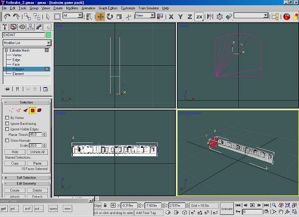
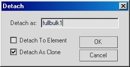
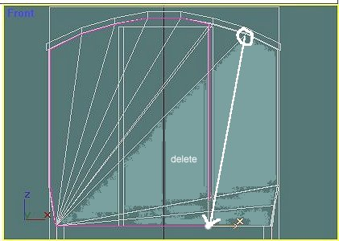
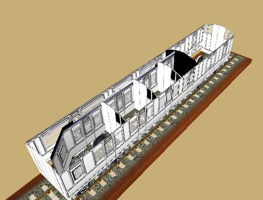

A Coach Made With GMax
by Richard Osborne
Chapter 8: Interiors
The insides have been sitting there waiting to be textured. If you have the project on screen, keyboard H, select the inside & outside parts. Right click on the screen then 'Hide Unselected'. This ability to hide & show parts is very useful. If you've hidden parts & want them back click on the 'Display' icon then 'Unhide by Name'. Make the already textured side active; press the 'Material Editor' & 'Get!'. The 'windows' texture should appear. It might indicate a 'Mat #5' or similar, scroll down until 'windows' shows.
Make one interior side active in 'polygon' mode. Apply the interior texture. The trick is to have the corridor opposite the compartments & facing the same direction. Some trial, error & flipping might well be needed. Do the same on the other side. If you've used 'solid' for the end use 'Get!' again. 'Unhide All' & select 'main' part.

Now, this is where life gets tricky. If you've used TSM you'll appreciate using alphanorm+ for the exterior & alphanorm- for the interior. We've used the same texture state for interior & exterior. Gmax uses the LOD manager to arrange the order in which parts are drawn. This is explained on christrains.com faq page I guided you towards earlier. There was also a long thread on train-sim.com which gave an in-depth look at the subject:- "Z-Buffer and Alpha Test" topic 7798.
Take a look at the screenshot; isolate the 'sides' part. On 'Selected Node' tick 'Collapse Node' & set 'SubObject ID' to 1. On the data panel tick 'Sort this SubObject' & 'Sort Priority' 5.

Isolate the 'insides' part. This time set the Manager to ID = 2; Sort Priority to 15. I don't entirely know the logic but it works. Let Gmax do the sorting. The insides just won't show if you make an error here.

Now export the model, don't forget to remove LOD data & have a look in SView. Again this screenshot was taken before applying alpha texture to the inside. If it doesn't show when you've applied alpha a couple of things could have gone wrong. You didn't MakeAceWin so that you have an earlier .ace file. The wrong texture state could be in use. On the Material Editor press 'Query', you'll see a list of parts which use that texture. You might have forgotten to 'Collapse All' after texturing. Just double check, the error will show soon enough. As Lee Trevino said "The more you practise the easier it looks!"

Some more bits for the interior now; first bulkheads between the guard & passenger sections. These are the same as the ends so we'll copy them. Highlight, in polygon mode, one interior end.

If we click 'detach' you can see some options, before we split parts into smaller units. This time we want a copy leaving the original polygons in place. Tick 'detach as Clone' , give it a sensible name & 'OK'. The new part won't be active, you'll have to select it, either keyboard H or the 'Select' icon. Select, centre axis, move it nearer the end of the guard's compartment, texture. Just texture with black or dark grey is fine. I'll always have some area of plain colour on a texture file. Clone the bulkhead, flip it & move it into the passenger compartment a bit. I find it easier to roughly place bulkheads & move them into place when they're all in place.
For a change the plans I'm using here give the exact compartment size; I could make a dummy part as a guide. I like to use jigs, a few moments to make them takes a lot of guesswork from modelling.

We need to make a box which will be used for the corridor partition, this has a kink at the end for the corridor connection. We also need some bulkheads; take the centre bulkheads, clone & rename, select new part, trim off a couple of polygons & drag one point down to floor level. You could trim a couple more polygons before texturing. I put a couple of bulkheads on the texture file assuming the first & third compartments had different colouring.

Position the first bulkhead, clone it until all compartments are closed. Clone, flip & close the other side of the compartments.
Let's see how it looks in SView. It'll be easier if we don't include the roof, select the roof & unlink it by pressing the button, the one with the broken chain. Select the parts you've just made & link them all to 'main'. At a later stage it'll be to our advantage to join some of these parts, bulkheads for example, together.
Although the compartment partition will use 'windows' texture & be on the inside don't be tempted to physically join it to the 'inside' part; it'll disappear. Gmax will sort the drawing order. Using the LOD manager just set this part to 'SubObject ID 2', the same as the inside part; don't ask for an explanation - it works. Export as before, look at the result & check that everything's in the right place. The graphics appear so much better in SView use it & note down those things which should be changed.
